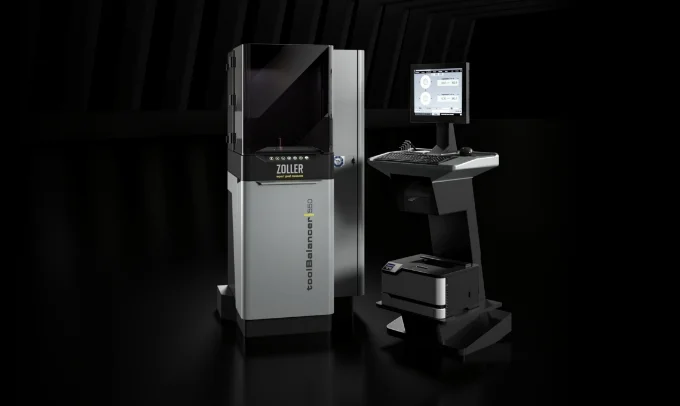

Werkzeugwuchten: mehr Qualität, geringere Kosten
Mit dem Thema Werkzeuge wuchten befassen sich auffallend wenige Fertigungen. Dabei ist Wuchten der Startpunkt für präzises Fertigen. »toolBalancer« von ZOLLER ist die perfekte Lösung und liefert Messergebnisse < 0,4 gmm.
Weiterlesen